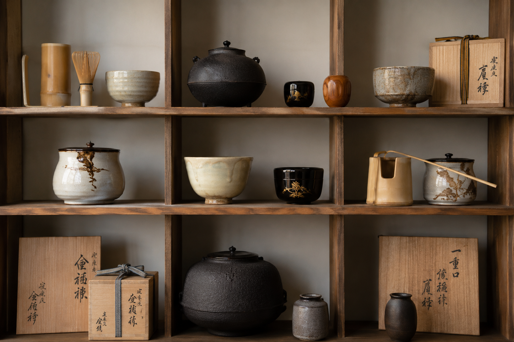
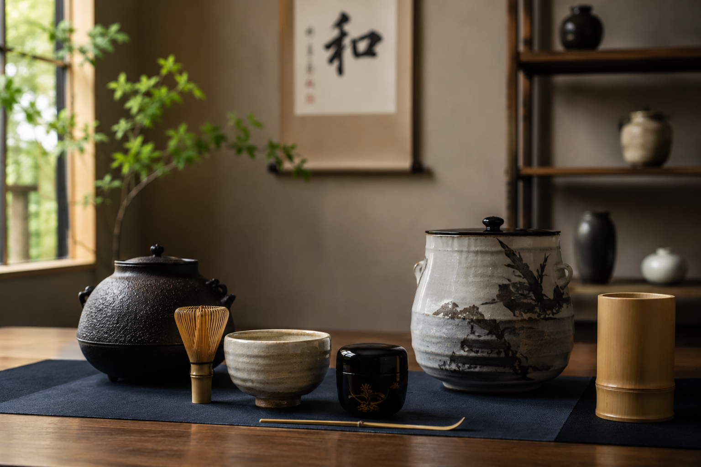
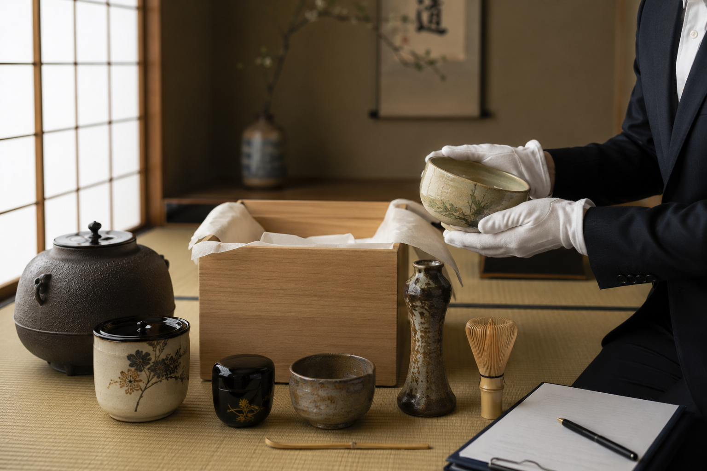
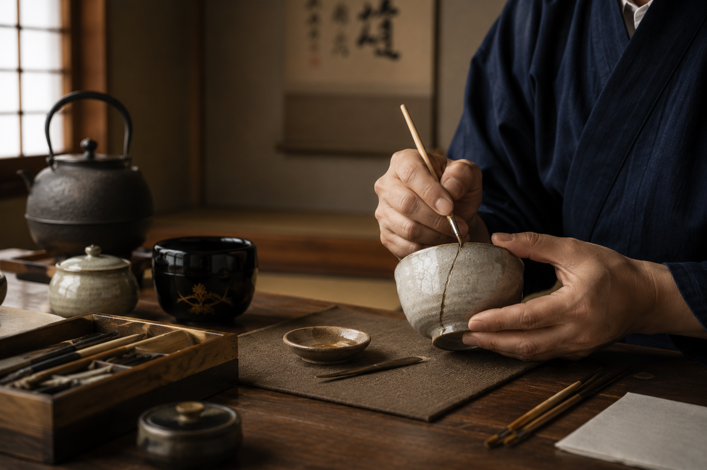
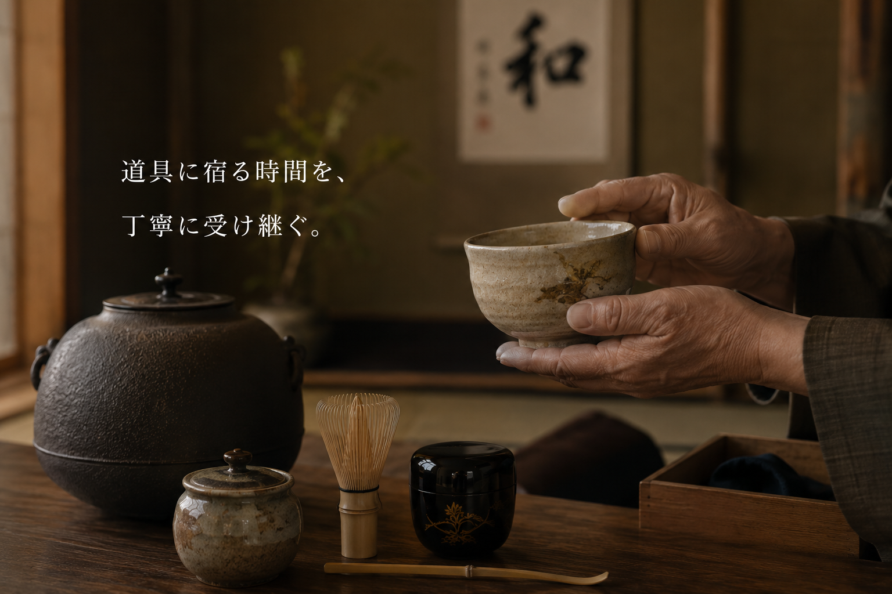

販売商品
茶碗、棗、水指、釜、掛物など、稽古から茶会まで使える茶道具を取り扱っています。
新古茶道具宮原は、茶道具の販売・買取・修理を通して、 受け継がれてきた品々を未来へつなぐお手伝いをいたします。

茶碗、水指、釜、棗、掛物など。お稽古から茶会まで、用途に合わせてご相談いただけます。
SERVICE

茶碗、棗、水指、釜、掛物など、稽古から茶会まで使える茶道具を取り扱っています。

ご自宅に眠る茶道具や、整理が必要な道具のご相談を承ります。点数が多い場合もご相談ください。

茶碗、釜、掛物、表具など、大切な道具を長く使うための修理・仕立てをご案内いたします。
NEWS

ABOUT US
茶道具は、単なる品物ではなく、使い手の時間や記憶を含んだものです。 私たちは一点一点の状態を見極め、次に大切にしてくださる方へ橋渡しすることを大切にしています。
詳しく見る販売・買取・修理について、まずはお気軽にお問い合わせください。